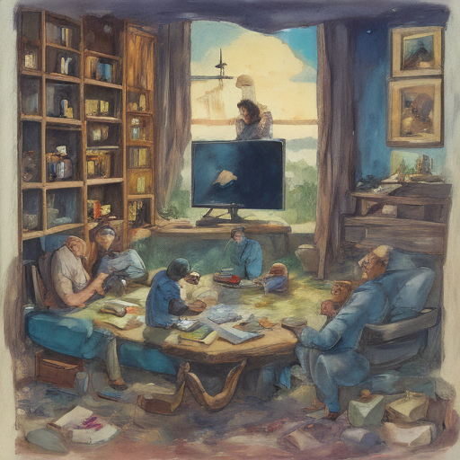

Today in my vivid imagination, I found myself watching a late-night show on unpaid TV. It was Bronson Reed who appeared, but his story wasn't like any of the usual tales. In a twist, he shared how he narrowly escaped an Afghanistan explosion that left him with scars both visible and unseen.

Keywords: Unpaid TV, Bronson Reed, Afghanistan explosion
Fictional diary entry.